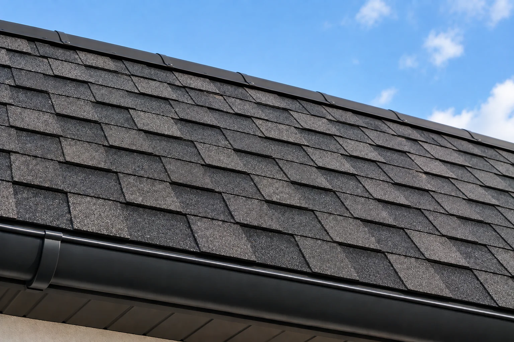

Сплошное основание
Гонт показывает каждую ступеньку доски. Настил делаю ровным: доска в прайсе — 430 ₽/м², фанера или ОСП-3 — 450 ₽/м². Подробнее об обрешётке.
Укладываю гибкую черепицу на частный дом. Гонт повторяет основание, поэтому сначала смотрю, ровный ли настил. Работаю лично в Архангельске, Северодвинске и Новодвинске. Материалы в цену работ не входят.
от 1 000 ₽/м²
Позвонить: +7 921 484-08-74
1 000 ₽/м² — это укладка гибкой черепицы. Сплошной настил, подкладочный слой и доборы в эту цену не входят: их добавляю, только если без них гонт не на что класть.
Гонт показывает каждую ступеньку доски. Настил делаю ровным: доска в прайсе — 430 ₽/м², фанера или ОСП-3 — 450 ₽/м². Подробнее об обрешётке.
Кладу его там, где этого требует система укладки: ендовы, карнизы, малый уклон. На всю крышу «на всякий случай» не стелю. Отдельной цены ковра в прайсе нет, объём согласую до работ.
Стартовую полосу и края закрепляю так, чтобы ветер не поднимал лепесток. Капельник, если он нужен на карнизе, в прайсе — 300 ₽/м.п.
Ряды веду со смещением стыков. Если швы встают друг над другом, вода получает прямую дорожку.
Верх закрываю коньковой черепицей той же системы, щель между скатами не оставляю.
Трубу, стену и разжелобок закрываю отдельно от рядового гонта. Обустройство ендовы в прайсе — 700 ₽/м.п., если она на крыше есть.
Сплошное основание без продуха держит влагу. Зазор и плёнку смотрю до укладки. Слой — на странице ветровлагозащиты, 180 ₽/м².
Желоба ставлю, когда воду с карниза нужно увести от фасада. Это водосток, желоба 770 ₽/м.п., не часть цены гонта.
В прайсе монтаж битумной гибкой черепицы — от 1 000 ₽/м². Итог зависит от площади, уклона, того, есть ли уже ровный настил, и от ендов с примыканиями. Материалы считаются отдельно.
Если по дому лучше металл, смотрю металлочерепицу, профнастил или фальцевую кровлю. Полный список — в прайсе.
Ориентир по укладке гибкой черепицы. Сплошное основание в эту формулу не входит: в прайсе оно стоит отдельно, 430 или 450 ₽/м². Точный состав согласую после фото или осмотра.
Гонт мягкий. Всё, что под ним горбом или щелью, со временем становится видно и начинает пропускать воду.
Перепад досок проступает на лепестке и ломает нахлёст ряда. Сначала выравниваю настил, потом клею и креплю гонт.
Ряды кладу так, чтобы вертикальные швы не сложились в одну линию. Иначе по этому шву идёт вода.
Незакреплённый карниз ветер поднимает. Трубу и стену закрываю отдельно: рядовой гонт сам узел не герметизирует.
Сплошной настил без вентиляции держит сырость на дереве. Зазор проверяю до того, как закрываю крышу черепицей.
Новый гонт не чинит гнилой настил и не заменяет плёнку. Сначала смотрю, на что его класть.
Старые доски оставляю, только если они ровные и сухие. Щели и прогибы закрываю сплошным основанием. Как это считается — на странице обрешётки.
Каркас, который держит нагрузку, не меняю. Повреждённые элементы считаю отдельно. Страница — стропила.
Порванный слой под настилом меняю до черепицы. Это ветровлагозащита, не часть укладки гонта.
Вздутие на одном участке может остаться ремонтом крыши. Если мягкая кровля изношена по всей площади, смотрим замену кровли.
Реальные кровельные работы, выполненные мной.
Позвоните или напишите в MAX. По снимку видно, есть ли сплошное основание или крыша ещё под другой материал.
Оцениваю, можно ли класть гонт сразу. Если настил сомнительный, осматриваю его на объекте.
До старта фиксируем черепицу, настил и подкладочный слой — только те позиции, которые нужны этой крыше.
Закрываю скаты, конёк и примыкания. На выполненные работы — гарантия 1 год.
Укладка гибкой черепицы — 1 000 ₽/м². Сплошной настил, подкладочный слой, ендовы и водосток в эту цену не входят. Материалы считаются отдельно.
Нет. Доска — 430 ₽/м², фанера или ОСП-3 — 450 ₽/м². Эти работы добавляю, если ровного настила ещё нет.
Только если они сухие и плоскость ровная. Щели и прогибы гонт не спрячет: их сначала закрываю сплошным основанием.
Здесь нужен сплошной ровный настил и ряды гонта со смещением стыков. Металл кладётся на шаговую обрешётку. Если дом лучше закрыть листом, смотрю металлочерепицу или профнастил.
Не всегда. Местное повреждение смотрю как ремонт крыши. Полная замена нужна, когда покрытие или настил уже не держат воду по всей площади.
Да. Работаю в Архангельске, Северодвинске и Новодвинске.
По снимку скажу, можно ли сразу укладывать гибкую черепицу или сначала нужно сплошное основание. Это оценка объёма, не итоговая смета.